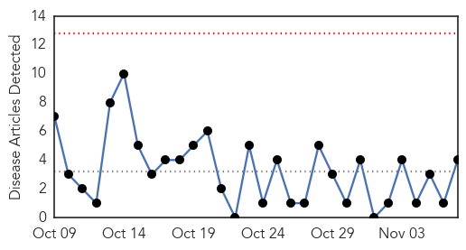
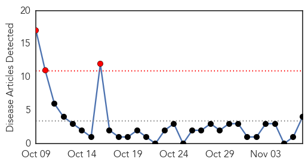
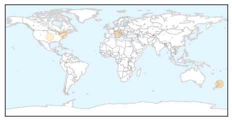

Swine Flu
30-Day Web Trend
0 alerts, 0 warnings

30-Day Twitter Trend
0 alerts, 0 warnings

Article Locations

Article Confidences

Top Articles:
- 0.975
- Santa Clara County Reports 10 Flu Deaths This Season
- 0.975
- To handle swine flu, Chandigarh administration starts 24×7 helpline
- 0.920
- As flu season begins, health officials wary of another vaccine mismatch
- 0.918
- Flu vaccine madness: FDA expediting approval for deadly flu shot linked to autoimmune disorders, paralysis & death -- Health & Wellness -- Sott.net
Top Tweets:
-
No tweets found for Nov 07, 2015
Measles
30-Day Web Trend
3 alerts, 0 warnings

30-Day Twitter Trend
0 alerts, 0 warnings

Article Locations
Article Confidences
Top Articles:
Top Tweets:
-
No tweets found for Nov 07, 2015